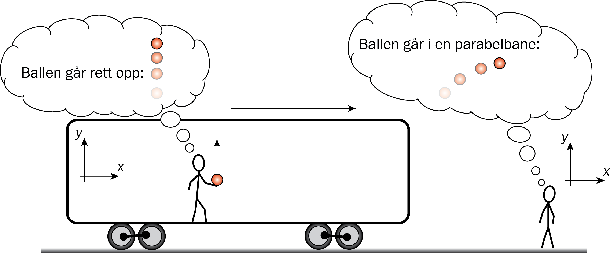
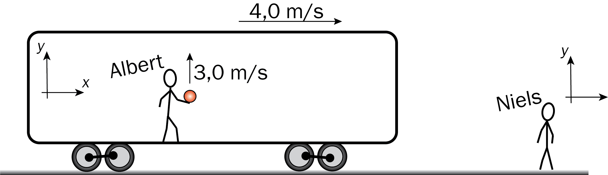
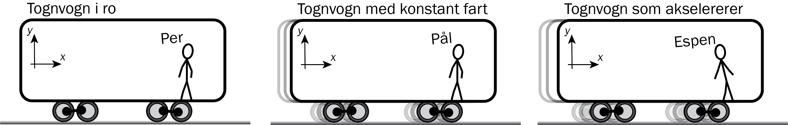
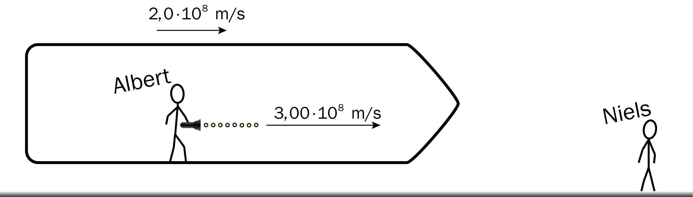
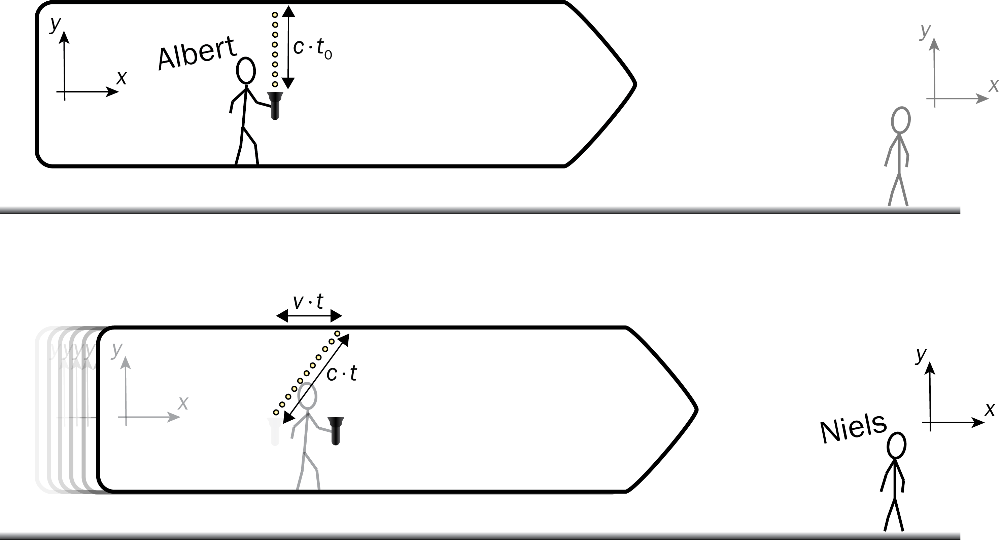
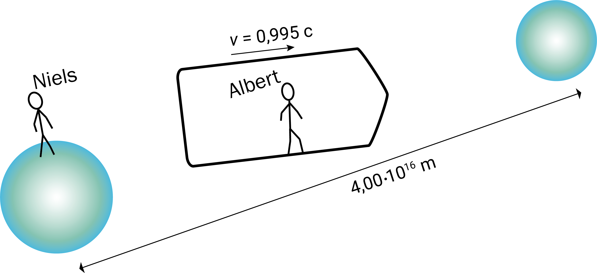
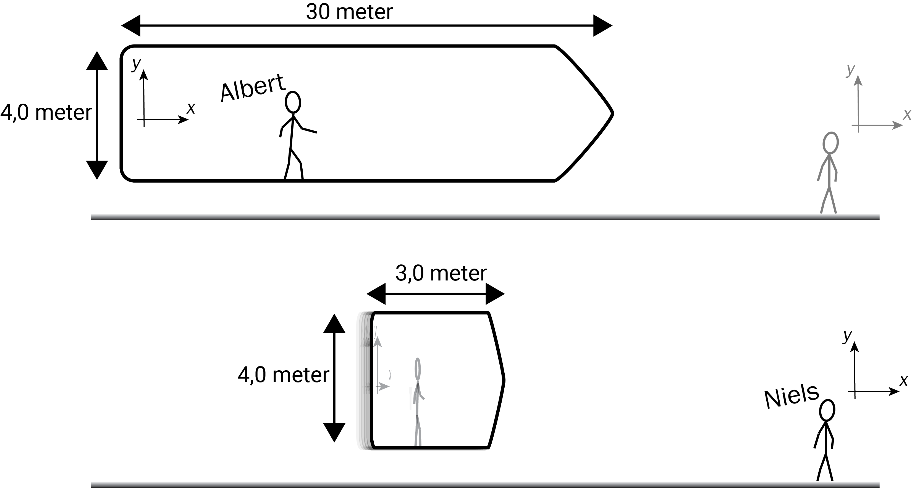
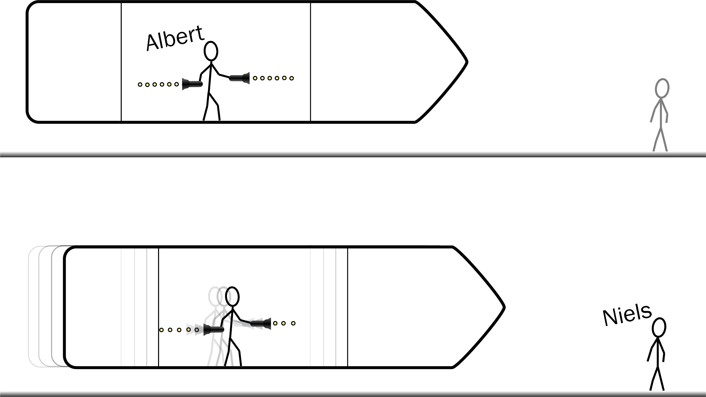
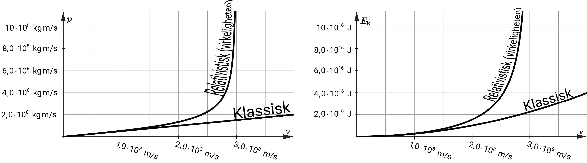

Et treghetssystem er et referansesystem som ikke akselerer.
F.eks. kan bakken være et treghetssystem,
og en togvogn som beveger seg med konstant fart et annet treghetssystem.

Et forsøk kan se ulikt ut sett fra ulike treghetssystemer, f.eks. slik det er illustrert med ballen over.
Eksempel
Albert står i ro i en togvogn og kaster en ball vertikalt oppover med startfart 3,0 m/s.
Niels står i ro på utsiden av togvogna.
I treghetssystemet til Niels beveger treghetssystemet til Albert seg mot høyre med farten 4,0 m/s.

Bestem startfarten og utgangsvinkelen til ballen, observert fra treghetssystemet til Niels.
Ifølge Niels har ballen en startfart 3,0 m/s oppover, og i tillegg en startfart 4,0 m/s mot høyre. Startfarten \(v\) og utgangsvinkelen \(\alpha\) farten danner med horisontalen blir da
\[ v = \sqrt{3^2 + 4^2} = 5\text{,}0 \text{ m/s} \;\;\; \text{ og }\;\;\; \alpha = \tan^{-1}\left( \frac{3}{4}\right) = 37° \]
Merk: Å være i et treghetssystem kjennes helt likt ut som å være i ro; Uten å sammenligne et treghetssystem med et annet referansesystem,
kan man ikke avgjøre om man står i ro eller beveger seg med konstant fart.
Dersom et referansesystem akselererer, kalles det ikke et treghetssystem.
I et referansesystem som akselererer, er det mulig å måle/kjenne at man akselererer.
Eksempel
Per og Pål er hvert sitt treghetssystem. Espen er ikke i et tregehetsystem.

Postulatene
Einsteins to postulater i den spesielle relativitetsteorien er
fysikkens lover er de samme i alle treghetssystemer
lysfarten i vakuum er den samme i alle treghetssystemer
Merk: Ordet postulat betyr en påstand eller forutsetning.
Postulatene over er to påstander Einstein tok utgangspunkt i for å utvikle den spesielle relativitetsteorien.
Det første postulatet stammer egentlig fra Galileo Galilei, som levde ca. 300 år før Einstein.
Det er altså ikke noe nytt Einstein fant på, men et grunnlag han konstruerte relativitetsteorien på.
Det andre postulatet var heller ikke helt nytt. På midten av 1800-tallet, mer enn 50 år før Einstein publiserte den spesielle relativitetsteorien i 1905,
ble en teori for hvordan lys oppfører seg utviklet av James Clerk Maxwell. Denne teorien ga blant annet at lysfarten en bestemt fart.
Det andre postulatet sier at lysfarten er konstant i alle treghetssystemer, men faktisk er lysfarten også konstant i akselererte referansesystemer.
Men i utviklingen av relativitetsteorien så Einstein bare på treghetssystemer.
For å skjønne det andre postulatet gjør vi et tankeeksperiment. Albert står i en rakett som har en konstant fart \(2\text{,}0 \cdot 10^8\) m/s mot Niels, som står i ro på bakken.
Albert "skyter" fotoner (lyspartikler) fra en lommelykt. I Albert sitt referansesystem har fotonene farten \(3\text{,}0 \cdot 10^8\) m/s.
Ut fra klassisk fysikk skulle man da tro at fotonene har farten \(5\text{,}0 \cdot 10^8\) m/s i Niels sitt referansesystem, men det er ikke riktig!
Både Albert og Niels observerer at lysfarten er \(3\text{,}0 \cdot 10^8\) m/s.

Merk: Lysfarten \(c=3\text{,}00 \cdot 10^8 \text{ m/s}\) er en naturkonstant.
Tidsdilatasjon
En konsekvens av at lysfarten er den samme for alle observatører, er at tiden blir ulik i ulike referansesystemer.
For å utlede uttrykket for tidsdilatasjon ser vi på et tankeeksperiment: Albert står i en rakett som har farten \(v\) mot Niels.
Albert skyter fotoner opp i taket. Både Albert og Niels observerer at fotonene har farten \(c\) (siden lysfarten er den samme), men Albert observerer at fotonene går rett opp,
men Niels observerer at de går på skrå.
Niels observerer at fotonene bruker lengre tid opp til taket enn det Albert observerer!

Strekningen henholdsvis Albert og Niels ser at lyset tilbakelegger er \( s_0 = \text{fart} \cdot \text{tid} = c \cdot t_0\) og \(s = c \cdot t\).
Ved hjelp av pytagoras og figurene over kan vi utlede følgende:
\[\begin{align}
s^2 &= \left( v \cdot t \right)^2 + s_0^2 \\
\left( c \cdot t \right)^2 &=\left( v \cdot t \right)^2 + \left( c \cdot t_0 \right)^2\\
\left( c \cdot t \right)^2 - \left( v \cdot t \right)^2 &= \left( c \cdot t_0 \right)^2 \\
t^2 - \left( \frac{v}{c} \cdot t \right)^2 &= t_0^2 \\
t^2\left(1 - \left(\frac{v}{c}\right)^2 \right) &= t_0^2 \\
t &= \frac{t_0}{\sqrt{1 - \left(\frac{v}{c}\right)^2}}
\end{align}\]
Dette uttrykket kalles uttrykket for tidsdilatasjon, og det er vanlig å skrive det som
\[ t = \gamma \cdot t_0, \;\;\text{ hvor }\gamma = \frac{1}{\sqrt{1 - \left(\frac{v}{c}\right)^2}} \text{ kalles Lorentzfaktoren.} \]
Tiden \(t_0\) kalles ofte egentiden (tiden mellom to hendelser i referansesystemet der hendelsene skjer på samme sted).
Eksempel
Albert reiser til en planet i et romskip.
Niels, som står i ro på jorda, observerer at avstanden til planeten er \(4\text{,}00 \cdot 10^{16}\) meter, og at romskipet har en fart på 99,5 % av lysfarten.

Bestem hvor lang tid reisen tar observert fra jorda, og hvor lang tid reisen tar for Albert.
Fra jorda blir tiden
\[ t = \frac{s}{v} = \frac{4\text{,}00 \cdot 10^{16} \text{ m}}{0\text{,}995 \cdot 3\text{,}00 \cdot 10^8 \text{ m/s}} = 1\text{,}34 \cdot 10^8 \text{ s} = 4\text{,}25 \text{ år} \]
Lorentzfaktoren blir
\[ \gamma = \frac{1}{\sqrt{1 - \left(\frac{v}{c}\right)^2}} = \frac{1}{\sqrt{1 - 0\text{,}995^2}} = 10\text{,}0 \]
Dermed blir tiden reisen tar for Albert
\[ t = \gamma t_0 \;\;\; \Rightarrow \;\; t_0 = \frac{t}{\gamma} = \frac{4\text{,}25 \text{ år}}{10\text{,}0} = 0\text{,}425 \text{ år} \approx 5 \text{ måneder} \]
Lengdekontraksjon
Fra eksempelet over, kan vi også skjønne at det må skje noe med avstander/lengder i relativitetsteorien;
Siden Albert opplever at reisen tar kortere tid enn det Niels observerer, så må avstanden Albert reiser, ifølge seg selv, være mindre enn avstanden Niels observerer.
Sammenhengen mellom avstanden (lengden) målt i to ulike referansesystemer er
\[ L = \frac{L_0}{\gamma} \]
hvor \(L_0\) er avstanden (lengden) målt i referansesystemet der det vi måler avstanden (lengden) av, er i ro. Lengdekontraksjonen skjer bare langs bevegelsesretningen.
Eksempel
Albert reiser til en planet i et romskip.
Niels, som står i ro på jorda, observerer at avstanden til planeten er \(4\text{,}00 \cdot 10^{16}\) meter, og at romskipet har en fart på 99,5 % av lysfarten.
Bestem hvor lang distanse Albert måler at det er mellom planetene.
Niels er i ro, og måler avstanden \(L_0 = 4\text{,}00 \cdot 10^{16}\) meter. Det gir at avstanden Albert måler er
\[ L= \frac{L_0}{\gamma} = \frac{4\text{,}00 \cdot 10^{16} \text{ m}}{10} = 4\text{,}00 \cdot 10^{15} \text{ m} \]
Altså måler Albert at avstanden er 10 ganger mindre enn avstanden Niels måler
(og fra forrige eksempel har vi at tiden Albert måler også er 10 ganger mindre enn tiden Niels måler).
Eksempel
Vi ser videre på eksempelet over.
Albert måler at lengden av romskipet hans er 30 meter, og at det er 4,0 meter høyt.
Hvor langt og hvor høyt er romskipet observert fra Niels sitt referansesystem?
Albert er i ro i forhold til romskipet, og måler lengden \(L_0 = 30\) meter. Det gir at lengden Niels måler er
\[ L= \frac{L_0}{\gamma} = \frac{30 \text{ m}}{10} = 3\text{,}0 \text{ m} \]
Høyden er på tvers av bevegelsesretningen, og endrer seg derfor ikke;
Både Albert og Niels observerer at romskipet er 4,0 meter høyt, men de er uenige om lengden:

Samtidighet
En konsekvens av den spesielle relativitetsteorien er at to hendelser som skjer samtidig i ett treghetssystem, ikke nødvendigvis skjer samtidig i et annet.
Eksempel
Albert står midt mellom to vegger i et romskip og sender fotoner (lyspartikler) framover og bakover.
Niels står i ro på bakken, på utsiden av romskipet. Ifølge Niels beveger romskipet seg med stor fart mot høyre.
Ifølge Albert treffer lyset den bakerste og fremste veggen samtidig.

Ifølge Niels treffer lyset den bakerste veggen først; Lyset treffer ikke veggene samtidig.
Merk: En forutsetning for at lyset ikke skal treffe begge veggene samtidig observert fra Niels sitt referansesystem,
er at lysfarten er den samme i begge referansesystemene.
Bevegelsesmengde og energi
Når farten er høy, må vi bruke relativistiske uttrykk for bevegelsesmengde \(p\) og kinetisk energi \(E_k\).
Utledningen av uttrykkene over er ganske kompliserte, og er utenfor pensumet i Fysikk 2. Jeg viser derfor ikke utledningene her.
Merk: Når farten er lav, får vi (omtrent) samme resultat med de klassiske uttrykkene og de relativistiske uttrykkene:
\[ p = \gamma mv \approx mv \;\;\; \text{ og }\;\;\; E_k = \left(\gamma - 1\right) mc^2 \approx \frac{1}{2}mv^2 \]
(men det er de relativistiske uttrykkene som alltid gir mest riktig svar)
En tommelfingerregel er at vi bør bruke de relativistiske uttrykkene når farten er mer enn 10 % av lysfarten (\(v > 0\text{,}10\,c\)).
For å sammenligne de klassiske og relativistiske uttrykkene er det vanlig å se på grafene til verdiene som funksjon av fart.
Grafene viser bevegelsesmengden og den kinetiske energien til en fotball som funksjon av fart.

Ifølge de klassiske uttrykkene er det ikke noe problem at fotballen beveger seg raskere enn lyset.
Men relativitetsteorien viser at det krever uendelig mye bevegelsesmengde og kinetisk energi å nærme seg lysfarten.
Eksempel
I tidligere eksempler har vi sett på en rakett som har en fart på 99,5 % av lysfarten.
Anta at massen til raketten er 1000 kg.
Bestem bevegelsesmengden og energien til raketten, både ifølge klassisk og relativistisk fysikk.
Farten er
\( v = 0\text{,}995 \cdot 3\text{,}00\cdot 10^8 = 2\text{,}985 \cdot 10^8 \text{ m/s}\).
Merk: Forholdene mellom de klassiske og relativistiske verdiene for bevegelsesmengde og energi blir større og større, jo nærmere lysfarten vi kommer.
I eksempelet over så vi at \(v = 0\text{,}995\) gir \(\gamma = 10\text{,}0\), og dermed en ti ganger større relativistisk bevegelsesmengde.
En fart på \(v = 0\text{,}999c\) gir \(\gamma = 22\text{,}4\)
En fart på \(v = 0\text{,}9999c\) gir \(\gamma = 70\text{,}7\)
En fart på \(v = 0\text{,}99999c\) gir \(\gamma = 224\)
\(\vdots\)
osv.